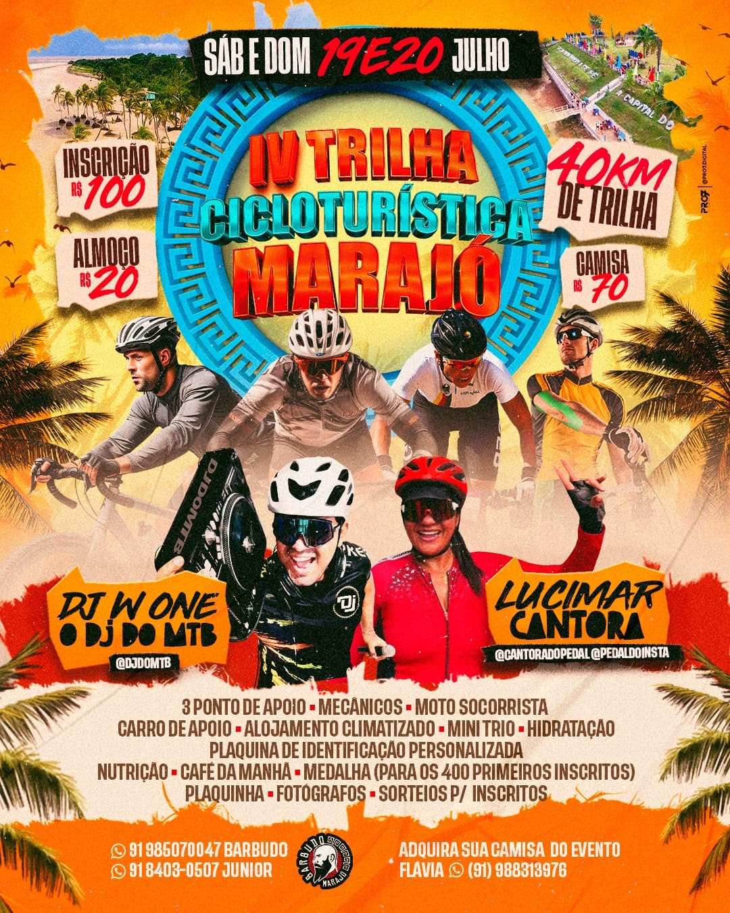

🚵 IV Trilha Cicloturística do Marajó · 📍 Salvaterra · 🗓️ 19 e 20 de julho

Detalhes da Trilha
🚴♀️
40 km
de trilha
⏱️
1h 42min
de duração
⛰️
102 m
de elevação
🛑 Pontos de apoio: km 10, 20 e 32
Ver no Strava
Legenda:
■
Estrada de terra (Percurso)
Saída
Chegada
Ponto de Apoio
 Chegada
Chegada